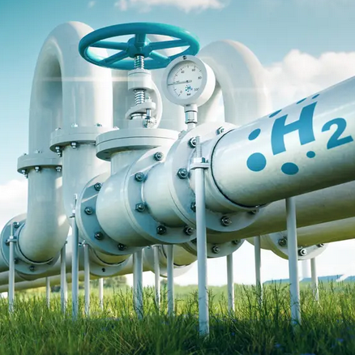
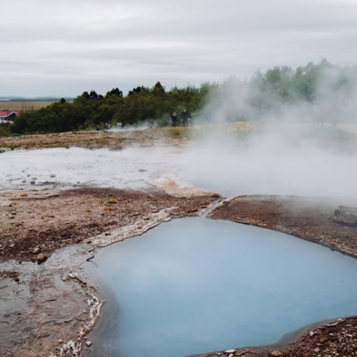

Solar
La energía solar es una de las formas más populares de energía limpia y se usa ampliamente en regiones soleadas como el Mediterráneo y partes de África.
Eólica
La energía eólica se genera utilizando turbinas que convierten el movimiento del viento en electricidad, siendo ideal para regiones como Europa del Norte y el centro de Estados Unidos.
Hidrógeno Verde
El hidrógeno verde se produce a partir de energía renovable y agua, y es una solución prometedora para el transporte limpio y la industria pesada, con potencial en zonas como Australia y el Golfo Pérsico.
Geotérmica
La energía geotérmica aprovecha el calor natural de la tierra para generar electricidad, siendo efectiva en países como Islandia y Nueva Zelanda.
Bioenergía
La bioenergía se produce a partir de materia orgánica y tiene un gran potencial en zonas rurales de América Latina y Sudeste Asiático.